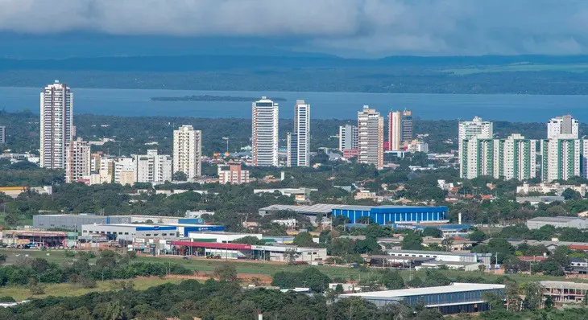

Palmas
Palmas é a capital do estado do Tocantins, localizada na Região Norte do Brasil. Fundada em 1989, a cidade é uma das cidades mais novas do país e foi projetada para ser a capital do estado, substituindo temporariamente a cidade de Miracema do Tocantins.
Ela é conhecida por seu ambiente planejado, sua natureza exuberante e seu clima quente. É uma cidade em crescimento que oferece uma mistura de modernidade e natureza, com uma variedade de atrações para os visitantes explorarem. Se você gosta de atividades ao ar livre e deseja conhecer uma das cidades mais jovens do Brasil, Palmas é um destino interessante a considerar.

Palmas